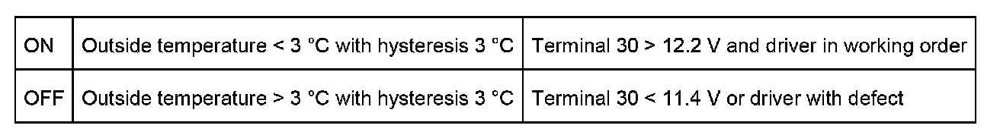

Heated Spray Nozzles
Heated Spray Nozzles
Heated spray nozzles
With terminal 15 ON, the spray nozzle heating is switched on and off based on the outside temperature transmitted via the K-bus. in order to prevent the spray nozzles freezing up dependent on the outside temperature. A control unit activates and monitors the spray nozzles.
Spray nozzle heating cuts in at:
